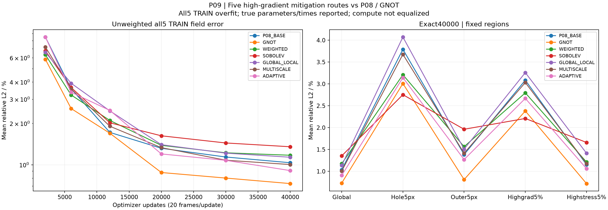
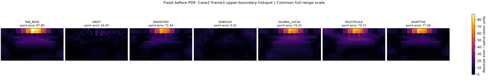
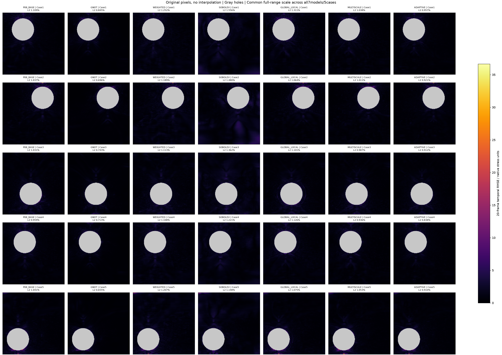
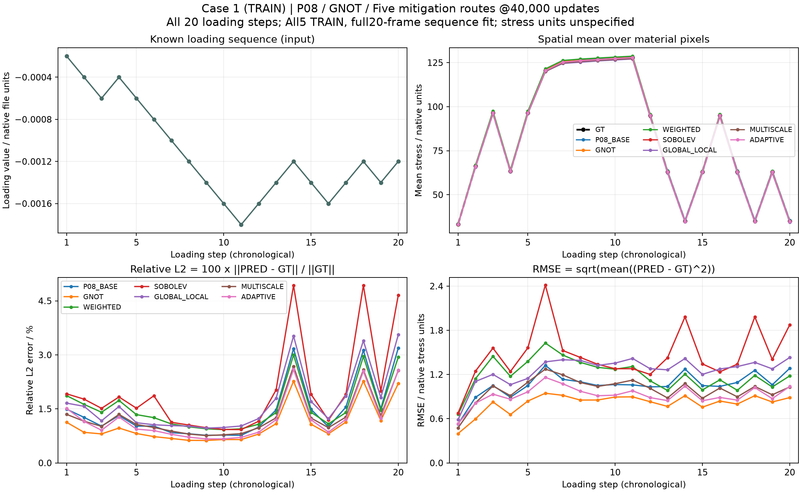
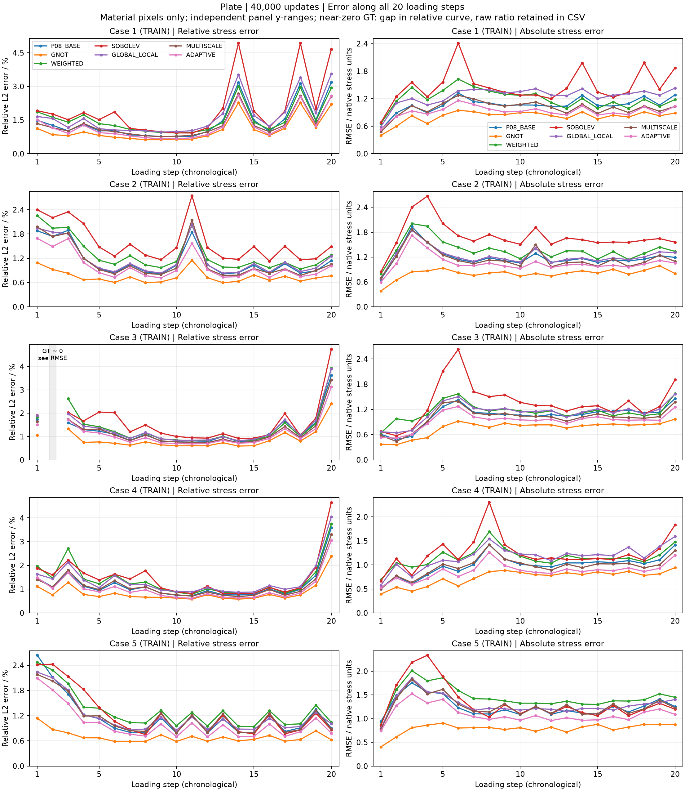

P09 / FIVE HIGH-GRADIENT MITIGATION ROUTES
应力集中与高梯度 · 五条路线独立对照
五组各完成40000步5例全部用于训练，无validation/test；每次更新监督一个完整case的20帧，各40000更新。原始材料像素，GT不修改，不插值或平滑。这是overfit能力实验，不能据此声称泛化或工程安全验证。
固定40000步 · 全局与局部一起比较
所有表头可点击排序。区域由同一GT/几何固定定义；全部指标为未加权评估，不用训练损失大小比较不同目标。相对L2是100×‖PRED−GT‖/‖GT‖，五例等权平均。
| 模型 | 参数 | 全场L2 % | 孔边5px L2 % | 外边界5px L2 % | 高梯度5% L2 % | 高应力5% L2 % | 梯度L2 % | 平均绝对峰值偏差 % | 最大单点绝对误差 |
|---|---|---|---|---|---|---|---|---|---|
| P08_BASE | 996,029 | 1.0354 | 3.7912 | 1.3840 | 3.0853 | 1.1530 | 51.7953 | 2.9052 | 87.7962 |
| GNOT | 980,964 | 0.7304 | 3.0088 | 0.8127 | 2.3809 | 0.7203 | 48.7839 | 1.1369 | 25.0750 |
| WEIGHTED | 996,029 | 1.1737 | 3.2095 | 1.5649 | 2.7956 | 1.2131 | 52.3069 | 2.7183 | 71.5393 |
| SOBOLEV | 996,029 | 1.3532 | 2.7535 | 1.9627 | 2.2097 | 1.6610 | 28.0757 | 2.2173 | 34.1488 |
| GLOBAL_LOCAL | 996,277 | 1.1354 | 4.0719 | 1.5092 | 3.2590 | 1.4141 | 54.4569 | 3.5932 | 74.3105 |
| MULTISCALE | 996,029 | 1.0049 | 3.6764 | 1.4150 | 3.0315 | 1.1767 | 51.8136 | 3.3546 | 73.7090 |
| ADAPTIVE | 996,029 | 0.9077 | 3.1432 | 1.2706 | 2.6687 | 1.0620 | 50.2983 | 2.7861 | 77.3574 |

区域、峰值和梯度指标定义
{
"regions": "Static geometry/GT-only masks: hole5=distance to hole<=5px;outer5=outer boundary distance<5px;high-gradient5=top5% material pixels by max-over20 absolute valid adjacent difference;high-stress5=top5% by max-over20 absGT. No hole-crossing gradients.",
"relative_L2": "100*norm(pred-GT)/norm(GT), unweighted; arithmetic mean over5cases",
"gradient_relative_L2": "Valid material adjacent differences, both directions; norm error divided by GT difference norm",
"peak_bias": "Per nonzero-GT frame max predicted stress vs max GT overmaterial; averaged absolute relative bias, locations may differ",
"fixed_hotspots": "Chosen before P09 from P08 diagnosis, not optimized on new models; all5 are TRAIN",
"scope": "All5TRAIN overfit; same data/seed/updatebudget, different objectives/compute; literature-inspired adaptations, not paper reproductions"
}五条独立路线与预算
| 路线 | 本次实现 |
|---|---|
| WEIGHTED | Fixed bounded train-GT weights:1+4exp(-holeDistance/5)+4clip(abs-neighbor-gradient/q95,0,1)+2clip(absGT/q95,0,1); normalize per case mean=1 |
| SOBOLEV | Global MSE +0.1*(mean squared adjacent material-edge gradient error / common all5 GT gradient energy); no edge crosses a hole |
| GLOBAL_LOCAL | Global+boundary-local residual network; ordinary full-field MSE; full global inputs retained |
| MULTISCALE | Shared-weight two-scale geometry encoding and grid-bandlimited query frequencies; ordinary MSE |
| ADAPTIVE | MSE warmup2000; then bounded dynamic weights1+4clip(EMA squared residual / per-case EMA mean,0,1); normalize mean1; EMA.95 updated only using existing training forwards; no extra inference |
三种损失路线和多尺度组逐字复用P08纯未训练初值；局部组复用兼容的未训练主干、裁剪融合层并新建局部分支，残差输出初始为零。不使用P08已训练权重。四组996029参数，局部组996277参数。相同seed20261111、AdamW3e-4/wd0/clip1、after-update6000/12000降LR、FP32/TF32无AMP、batch1、归一化、case轮换和checkpoint100。梯度损失是匹配GT差分，不是惩罚梯度变小。只在材料内部相邻像素计算差分。
多尺度组使用共享权重的.2/.05两种几何邻域、合并256个token，并使用相同62维、频率1..256的坐标编码；计算量不同。局部组保留全局输入和全场监督，加上距材料边界12像素以内的局部残差分支。五条为文献启发的适配实现，不是五篇论文原样复现；不称等FLOPs。
| 模型 | 训练过程UTC / min | 最终评估输出 / s | TRAIN-best步数 |
|---|---|---|---|
| P08_BASE | 沿用旧结果 | - | 40000 |
| GNOT | 沿用旧结果 | - | - |
| WEIGHTED | 25.48 | 1.00 | 40000 |
| SOBOLEV | 26.48 | 1.08 | 40000 |
| GLOBAL_LOCAL | 26.88 | 0.99 | 40000 |
| MULTISCALE | 33.74 | 1.00 | 40000 |
| ADAPTIVE | 26.03 | 1.29 | 40000 |
保存预测 · GT / Prediction / 两种误差
加载中…
Prediction
Pointwise relative error (%)
Absolute error
点击原始像素查看数值
GT与预测共用色标；孔洞灰色；逐点相对误差为100×|PRED−GT|/|GT|，GT=0时未定义。另列绝对误差，单位沿用数据文件。
局部热点与空间误差

全部5例、7模型、全20帧空间RMSE

热点由P08诊断在P09训练前选定。单点改善不代表整体改善；也不证明原GT边界突变的物理正确性。
逐Case加载曲线 · 固定40000步
矢量图
五例合并曲线 · 全部TRAIN
GT接近零时相对曲线留空，原始比值和绝对RMSE保留CSV。
